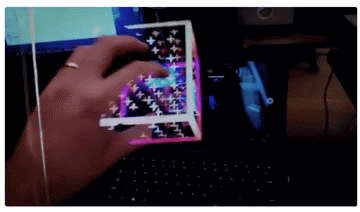

The fundamental limit in technology is not its size or cost or speed, but it is how we interact with it. Human experience is measured by just this and this what Leap motion believes in and its new development Project North Star aims to improve. Leap motion is a company that has always dealt with human and computer interfaces. The Magic Leap goggles were the best until today. But can there be better? The answer is yes!

Leap motion has outsourced this new project to Japan where they are making the magic happen.
Doesn’t it look magical? Although the goggles seem a little wonky as compared to its predecessors there is a lot of work being done in the area to make the functionality seamless and to increase the field of view. I want to take a back seat and look at how far we have come.
Let’s talk a little bit about Microsoft hololens and Magic Leap One. Both of these required the users to have menial expectations to get the experience they want. There is lot of critiques out there throwing negative opinions about them and I believe that this is a very important step towards achieving what each person expects out of the AR headsets or what the sci-fi movies have put in our heads.
The first ever AR headset was the Microsoft hololens which was released in 3/30/2016.It has Intel 32-bit (1GHz) processor with Windows Mixed Reality Operating System and its introductory price was $3000 to $5000. It suffers from a very limited horizontal field of view of around 30 degrees and a vertical field of view of 17.5 degrees.
Then there was almost a 3 year gap after which the Magic Leap was released in 8/8/2018. It has a 4:3 aspect ratio and has a 30 degree vertical and a 50 degree horizontal field of view. This is 45 degrees better than the hololens.
Picture source: link.
The granularity of mapping works much better in the magic leap than the hololens. But the magic leap has problems matching to black which the hololens does pretty good with. The magic leap there is more jitteriness than drift. Comparatively the hololens has lower drift. The clipping (i.e., in lay man terms, seeing hollow objects on pushing the camera into them) is much more pronounced in the magic leap which can get annoying as it breaks the immersion. Both the headsets suffer from objects being transparent that can make or break and experience.
Another important thing to discuss is if the objects in the augmented world can hide behind real world objects. It does it pretty well only if the room has been mapped properly.
What does hand tracking need to be like for an augmented reality headset? How fast does it need to be; do we need a hundred frames per second tracking or a thousand frames per second?
How does the field of view impact the interaction paradigm? How do we interact with things when we only have the central field, or a wider field? At what point does physical interaction become commonplace? How does the comfort of the interactions themselves relate to the headset’s field of view?
What are the artistic aspects that need to be considered in augmented interfaces? Can we simply throw things on as-is and make our hands occlude things and call it a day? Or are there fundamentally different styles of everything that suddenly come out when we have a display that can only ‘add light’ but not subtract it?
All these were the question that were pondered over before developing "Project North Star".
The project was developed with a large reflector area which is around a 5.5 inch smartphone displays. They were then 3D printed to check if the prototypes match the expectations which they did and proved that they were on the right track. Then the surfaces were made reflective (receives 50% of the light while reflecting the rest). This was done so that due the logarithmic sensitivity of the eye, the displayed content can be very clear while the existing light can be reflected giving the content being displayed a real world kind of feel.
It has a much better field of view as compared to the hololens and magic leap. The field of view is around 95° horizontal and 70° vertical with a 20 degree vertical (downwards) tilt and a 65% stereo overlap. It could be mass manufactured for around £150. The software developed and the manufacturing of the items are open source and the documentation is solid for anyone to be able to follow along. It is not a standalone headset, will be driven from an external computer (could be a mobile). The 2 high refresh rate 3.5″ liquid crystal displays (LCD's) will be driven with a Analogix display driver. They've coated the lenses in silver to make them 50% reflective. It also has a 180 degree hand tracking sensor and pushes 12 frames per second.
Also the weight of this device is reduced to a huge extent (given that it requires an external CPU). The combination of the open air design, what the company calls it, and the transparency generally makes it feels more comfortable than any VR system does. Sliding the reflectors slightly out from the face gives you room for a wearable camera, which the developers threw together created from a disassembled Logitech webcam. Very scrappy!
Also the vertical field of view struck them most of all; they could now look down with their eyes, put the hands at their chests and still see augmented information overlaid on top of their hands. This was not the minimal functionality required for a compelling experience, this was luxury as they said.
They experience just how important field of view and frame rate can be. The developers said everytime they cut off one centimeter it felt like they cut of three.
During their final revision they wanted to a makeover design to have room for enclosed sensors and electronics, better cable management, cleaner ergonomics and better curves and support for off the shelf head-gear mounting systems.
The developers say it is important to look at the following details for further progression of the work:
1. Inward-facing embedded cameras for automatic and precise alignment of the augmented image with the user’s eyes as well as eye and face tracking.
2. Head mounted ambient light sensors for 360 degree lighting estimation.
3. Directional speakers near the ears for discrete, localized audio feedback
4. Electrochromatic coatings on the reflectors for electrically controllable variable transparency
5. Micro-actuators that move the displays by fractions of a millimeter to allow for variable and dynamic depth of field based on eye convergence
The field of view could be even further increased by moving to slightly non-ellipsoidal ‘freeform’ shapes for the reflector, or by slightly curving the displays themselves (like on many modern smartphones).
The most amazing part of the working of the product is how well the hand is being tracked, how the objects hide behind the real world objects and how quick and responsive it is.
With such large field of view we can start thinking about the applications of the technology. It definitely can be of much more use as compared to the previous platforms which were most certainly ahead of its time. Since the interaction is made much better and the response times are reduced (given that the device requires connection to a CPU) I can already imagine medical students using it in the operation room where there is access to CPU and there can be Augmented tutorials on how to cure a dummy patient. Architects can collaboratively design a building and can scale the building in real time to place the model scaled to the right size at the desired location. Also with an increased field of view and object occlusion taken care of the experience is bound to be more immersive. Scaling to very big areas and using outdoors is still a concern.
All this takes us closer to imagine a world with AR. This can be without question be imagined using at homes and in offices. Connected to a CPU it can eliminate the usage of monitors if the technology is there. Monitors will become obsolete! Wow this already makes me feel old. In the future as the technology gets better and smaller we can have mobile AR glasses (not headsets) and that can have endless possibilities.
Talking about haptics there is still a very big concern as there is nothing more than the headset to give feedback as there are no wearables on the hand as well. VR headsets and gloves perform much better in these scenarios. But this raises a bigger question was AR meant for the similar use as VR. VR is purely immersive and can have such equipment indoors. But ARs main functionality is mapping the world around us with interesting and useful models. This is still a topic of debate.
The mechanical parts and the software are ready for prime time usage by people, but the other areas are less developed. The reflectors and display driver board are custom-made and expensive to produce in single units and hence need to be mass produced as it becomes cheaper that way. There is also research going on how to make the custom components made available to everyone.
The headset new addition is ultra wide tracking module that is already being incorporated in VR headsets with AR in the horizon. So the platform is very much a work in progress and the company encourages the developers in the world to help be part of the journey towards building a seamless AR device.
It is truly an exciting time to get on board this particular AR project and contribute towards revolutionizing UI displays and UX.